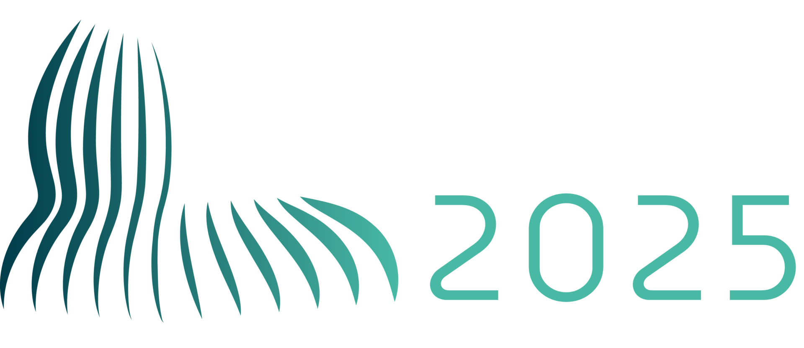

<!DOCTYPE html>
<html>
<head>
    
    <meta http-equiv="content-type" content="text/html; charset=UTF-8" />
    
        <script>
            L_NO_TOUCH = false;
            L_DISABLE_3D = false;
        </script>
    
    <style>html, body {width: 100%;height: 100%;margin: 0;padding: 0;}</style>
    <style>#map {position:absolute;top:0;bottom:0;right:0;left:0;}</style>
    <script src="https://cdn.jsdelivr.net/npm/leaflet@1.9.3/dist/leaflet.js"></script>
    <script src="https://code.jquery.com/jquery-3.7.1.min.js"></script>
    <script src="https://cdn.jsdelivr.net/npm/bootstrap@5.2.2/dist/js/bootstrap.bundle.min.js"></script>
    <script src="https://cdnjs.cloudflare.com/ajax/libs/Leaflet.awesome-markers/2.0.2/leaflet.awesome-markers.js"></script>
    <link rel="stylesheet" href="https://cdn.jsdelivr.net/npm/leaflet@1.9.3/dist/leaflet.css"/>
    <link rel="stylesheet" href="https://cdn.jsdelivr.net/npm/bootstrap@5.2.2/dist/css/bootstrap.min.css"/>
    <link rel="stylesheet" href="https://netdna.bootstrapcdn.com/bootstrap/3.0.0/css/bootstrap-glyphicons.css"/>
    <link rel="stylesheet" href="https://cdn.jsdelivr.net/npm/@fortawesome/fontawesome-free@6.2.0/css/all.min.css"/>
    <link rel="stylesheet" href="https://cdnjs.cloudflare.com/ajax/libs/Leaflet.awesome-markers/2.0.2/leaflet.awesome-markers.css"/>
    <link rel="stylesheet" href="https://cdn.jsdelivr.net/gh/python-visualization/folium/folium/templates/leaflet.awesome.rotate.min.css"/>
    
            <meta name="viewport" content="width=device-width,
                initial-scale=1.0, maximum-scale=1.0, user-scalable=no" />
            <style>
                #map_c6b11d3fb71085ccc5319df2e21cf9d7 {
                    position: relative;
                    width: 100.0%;
                    height: 100.0%;
                    left: 0.0%;
                    top: 0.0%;
                }
                .leaflet-container { font-size: 1rem; }
            </style>
        
    <script src="https://unpkg.com/leaflet-control-geocoder/dist/Control.Geocoder.js"></script>
    <link rel="stylesheet" href="https://unpkg.com/leaflet-control-geocoder/dist/Control.Geocoder.css"/>
    <script src="https://cdn.jsdelivr.net/npm/leaflet.fullscreen@3.0.0/Control.FullScreen.min.js"></script>
    <link rel="stylesheet" href="https://cdn.jsdelivr.net/npm/leaflet.fullscreen@3.0.0/Control.FullScreen.css"/>
<link rel="stylesheet" type="text/css" href="./emoji.css"></head>
<body>
    
    <style>.leaflet-container { height: 100% !important; }</style>
    
            <div class="folium-map" id="map_c6b11d3fb71085ccc5319df2e21cf9d7" ></div>
        
</body>
<script>
    
    
            var map_c6b11d3fb71085ccc5319df2e21cf9d7 = L.map(
                "map_c6b11d3fb71085ccc5319df2e21cf9d7",
                {
                    center: [40.0, 10.0],
                    crs: L.CRS.EPSG3857,
                    zoom: 2,
                    zoomControl: true,
                    preferCanvas: true,
                    lang: "en",
                }
            );

            

        
    
            var tile_layer_e8758e482436f897c4f3fb77036b383c = L.tileLayer(
                "https://{s}.basemaps.cartocdn.com/light_all/{z}/{x}/{y}{r}.png",
                {"attribution": "\u0026copy; \u003ca href=\"https://www.openstreetmap.org/copyright\"\u003eOpenStreetMap\u003c/a\u003e contributors \u0026copy; \u003ca href=\"https://carto.com/attributions\"\u003eCARTO\u003c/a\u003e", "detectRetina": false, "maxNativeZoom": 20, "maxZoom": 20, "minZoom": 0, "noWrap": false, "opacity": 1, "subdomains": "abcd", "tms": false}
            );
        
    
            tile_layer_e8758e482436f897c4f3fb77036b383c.addTo(map_c6b11d3fb71085ccc5319df2e21cf9d7);
        
    
            var marker_96297a2590291b53b92e2961d01c233e = L.marker(
                [51.508113, 0.029707],
                {}
            ).addTo(map_c6b11d3fb71085ccc5319df2e21cf9d7);
        
    
            var icon_94132acbe4dbf99f5152fe07f5d6bb43 = L.AwesomeMarkers.icon(
                {"extraClasses": "fa-rotate-0", "icon": "fa-user", "iconColor": "white", "markerColor": "gray", "prefix": "fa"}
            );
            marker_96297a2590291b53b92e2961d01c233e.setIcon(icon_94132acbe4dbf99f5152fe07f5d6bb43);
        
    
        var popup_0ab376191835cfd6721ee64fa3778190 = L.popup({"maxWidth": "100%"});

        
            
                var html_5357f556d79788b510b940c8d99aa328 = $(`<div id="html_5357f556d79788b510b940c8d99aa328" style="width: 100.0%; height: 100.0%;"><a href="https://2025.ieee-iscas.org" target="_blank"></a></div>`)[0];
                popup_0ab376191835cfd6721ee64fa3778190.setContent(html_5357f556d79788b510b940c8d99aa328);
            
        

        marker_96297a2590291b53b92e2961d01c233e.bindPopup(popup_0ab376191835cfd6721ee64fa3778190)
        ;

        
    
    
            marker_96297a2590291b53b92e2961d01c233e.bindTooltip(
                `<div>
                     <div style="display: flex; align-items: center; height: 100%;"><div style="text-align: left; font-family: Trebuchet MS; font-size: 1.5em;"><b>IEEE ISCAS 2025</b><br>London<br>United Kingdom <span class="emoji">🇬🇧</span></div></div>
                 </div>`,
                {"sticky": true}
            );
        
    
            var marker_14a70fa4aa0b598b6bd48ac60b1ab625 = L.marker(
                [48.851468, 2.341089],
                {}
            ).addTo(map_c6b11d3fb71085ccc5319df2e21cf9d7);
        
    
            var icon_13266ab27e75aa5cddcc429193ade4e5 = L.AwesomeMarkers.icon(
                {"extraClasses": "fa-rotate-0", "icon": "fa-user", "iconColor": "white", "markerColor": "gray", "prefix": "fa"}
            );
            marker_14a70fa4aa0b598b6bd48ac60b1ab625.setIcon(icon_13266ab27e75aa5cddcc429193ade4e5);
        
    
        var popup_4c6fb47cf7af23e8fa829ee0793fa34c = L.popup({"maxWidth": "100%"});

        
            
                var html_8d14f0ac98b29a72b1735ddc836ba4ab = $(`<div id="html_8d14f0ac98b29a72b1735ddc836ba4ab" style="width: 100.0%; height: 100.0%;"><a href="https://www.newcas2025.com" target="_blank"></a></div>`)[0];
                popup_4c6fb47cf7af23e8fa829ee0793fa34c.setContent(html_8d14f0ac98b29a72b1735ddc836ba4ab);
            
        

        marker_14a70fa4aa0b598b6bd48ac60b1ab625.bindPopup(popup_4c6fb47cf7af23e8fa829ee0793fa34c)
        ;

        
    
    
            marker_14a70fa4aa0b598b6bd48ac60b1ab625.bindTooltip(
                `<div>
                     <div style="display: flex; align-items: center; height: 100%;"><div style="text-align: left; font-family: Trebuchet MS; font-size: 1.5em;"><b>IEEE NEWCAS 2025</b><br>Paris<br>France <span class="emoji">🇫🇷</span></div></div>
                 </div>`,
                {"sticky": true}
            );
        
    
            var marker_77b0a99e4a9c669a993866a7eabe4bca = L.marker(
                [44.841225, -0.580036],
                {}
            ).addTo(map_c6b11d3fb71085ccc5319df2e21cf9d7);
        
    
            var icon_ccc3c0c2615dbc115a7cce0c7d17f2d0 = L.AwesomeMarkers.icon(
                {"extraClasses": "fa-rotate-0", "icon": "fa-user", "iconColor": "white", "markerColor": "gray", "prefix": "fa"}
            );
            marker_77b0a99e4a9c669a993866a7eabe4bca.setIcon(icon_ccc3c0c2615dbc115a7cce0c7d17f2d0);
        
    
        var popup_e87f0d84474e97ab34633199b3363925 = L.popup({"maxWidth": "100%"});

        
            
                var html_d9bb4e5bfbacac16b6476b414faceafb = $(`<div id="html_d9bb4e5bfbacac16b6476b414faceafb" style="width: 100.0%; height: 100.0%;"><a href="https://aicas2025.org" target="_blank"></a></div>`)[0];
                popup_e87f0d84474e97ab34633199b3363925.setContent(html_d9bb4e5bfbacac16b6476b414faceafb);
            
        

        marker_77b0a99e4a9c669a993866a7eabe4bca.bindPopup(popup_e87f0d84474e97ab34633199b3363925)
        ;

        
    
    
            marker_77b0a99e4a9c669a993866a7eabe4bca.bindTooltip(
                `<div>
                     <div style="display: flex; align-items: center; height: 100%;"><div style="text-align: left; font-family: Trebuchet MS; font-size: 1.5em;"><b>IEEE AICAS 2025</b><br>Bordeaux<br>France <span class="emoji">🇫🇷</span></div></div>
                 </div>`,
                {"sticky": true}
            );
        
    

            var geocoderOpts_geocoder_3ad74695cb1d4f0f8bec005a094f7517 = {"collapsed": false, "defaultMarkGeocode": true, "position": "topright", "provider": "nominatim", "providerOptions": {}, "zoom": 11};

            // note: geocoder name should start with lowercase
            var geocoderName_geocoder_3ad74695cb1d4f0f8bec005a094f7517 = geocoderOpts_geocoder_3ad74695cb1d4f0f8bec005a094f7517["provider"];

            var customGeocoder_geocoder_3ad74695cb1d4f0f8bec005a094f7517 = L.Control.Geocoder[ geocoderName_geocoder_3ad74695cb1d4f0f8bec005a094f7517 ](
                geocoderOpts_geocoder_3ad74695cb1d4f0f8bec005a094f7517['providerOptions']
            );
            geocoderOpts_geocoder_3ad74695cb1d4f0f8bec005a094f7517["geocoder"] = customGeocoder_geocoder_3ad74695cb1d4f0f8bec005a094f7517;

            L.Control.geocoder(
                geocoderOpts_geocoder_3ad74695cb1d4f0f8bec005a094f7517
            ).on('markgeocode', function(e) {
                var zoom = geocoderOpts_geocoder_3ad74695cb1d4f0f8bec005a094f7517['zoom'] || map_c6b11d3fb71085ccc5319df2e21cf9d7.getZoom();
                map_c6b11d3fb71085ccc5319df2e21cf9d7.setView(e.geocode.center, zoom);
            }).addTo(map_c6b11d3fb71085ccc5319df2e21cf9d7);

        
    
            L.control.fullscreen(
                {"forceSeparateButton": true, "position": "topright", "title": "Expand me", "titleCancel": "Exit me"}
            ).addTo(map_c6b11d3fb71085ccc5319df2e21cf9d7);
        
</script>
</html>